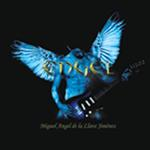

| Artist: | Engel |
| Title: | Engel |
| Label: | Musea FGBG 4432.AR |
| Length(s): | 55 minutes |
| Year(s) of release: | 2002 |
| Month of review: | [05/2003] |
| 1) | Yo | 3.31 |
| 2) | La Princesa De Las Ranas | 5.00 |
| 3) | Un Día Nublado | 6.37 |
| 4) | Engel | 5.23 |
| 5) | El Nino Que Hablaba Con El Viento | 5.15 |
| 6) | Felices Suenos | 5.07 |
| 7) | Una Imagen Para El Diablo | 5.15 |
| 8) | El Pajaro Azul | 5.16 |
| 9) | El Rostro De Ajanta | 5.28 |
| 10) | El Ultimo Viaje Del Galeón | 5.28 |
| 11) | Recuerdos De Mi Habitación | 2.37 |
| 12) | Fin | 1.19 |
La Princesa De Las Ranas contains in the same Celtic way, rather percussive and frolic. Although plenty of attention is being given to melody and the like, I am not particularly fond of the music. It is a bit too straightforward for me. It ends with moody bagpipes.
Un Día Nublado notwithstanding its Spanish name, is sung in English. Again, very much on the mellow side with melodious flute and such dominating. It does end on a more orchestral note, but Engel does not manage to convince me.
Talking of him, we now come to the track Engel itself. The melody here already sounds familiar. Some moorish influences vie with the usual Celtic ones. Or maybe the Celtic influences are enhanced by the bagpipe presence. The vocalist has, especially when compared with the one of the previous song, a tinny and insecure voice. More orchestration also sets in, but this time in the middle. At the end we find piano instead, quite a nice melody there. El Nino Que Hablaba Con El Viento is distinctive mainly because of the dancing accordion sound. The composition is mainly built around the melody and is nothing like progressive rock at all. Simple melodious folk. Halfway we move into something darker, with keys and lush guitar playing. Felices Suenos opens with acoustic guitar, a bit lullabyish. The remainder of the song is quite uneventful, filled with melody but no bite and little staying power.
On Una Imagen Para El Diablo the guitar are bit rowdier than usual, but the composition continues to be a slowmoving one. The male vocals are in Spanish this time, and they fit well with the sad music, which is a ballad in the original sense.
El Pajaro Azul signifies a return to the folky side of things, coming quite close to a jig. The opening of El Rostro De Ajanta is exotic and oriental sounding and has a certain tenseness to it. The percussion is also somewhat Indian in style. At some point it seems like he wants to go into the direction of Murray Head's One Night In Bangkok, but he chooses for Mike Oldfield instead. A rather busy track with, surprise, sequencers. There is something very optimistic about it, but also plenty of electronics in Jarre style. This gives the song a dated sound.
El Ultimo Viaje Del Galeón is the last of the longer tracks, opening with melodious flute. One can compare this with some of Celtic parts on Camel's Harbour Of Tears. Recuerdos De Mi Habitación is a lightfooted affair with percussion and a bit of flute. Fin is the short closer with pouring rain.